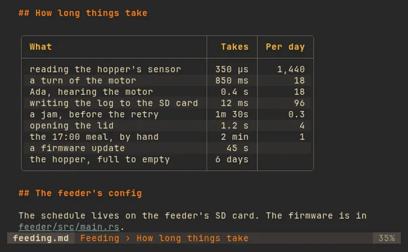
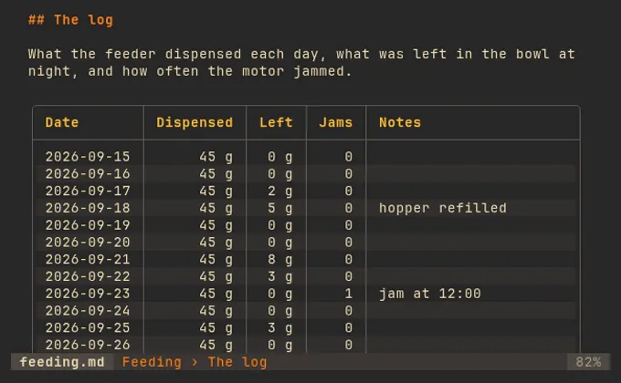
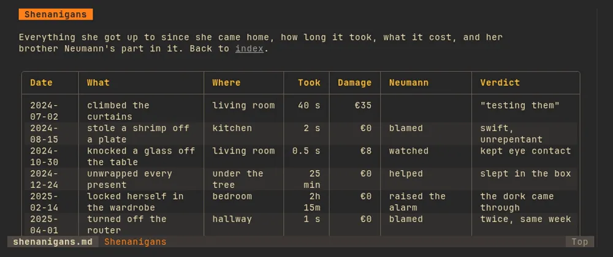

Tables you can work with #
Sorting knows its units: 350 µs, 12 ms, 1.2 s,
1m 30s and 6 days sort as the durations they are, 1,440 as a
number and €420 as money. In a long table, the header row stays on screen
as it scrolls.
s sort by a column ← → another table t auto, grid, records


At any width #
Prose rewraps and tables re-lay out the moment the terminal changes size. A table too wide to fit turns into records, a card per row; widen the terminal and the grid comes back.
